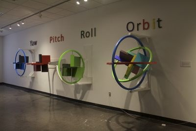
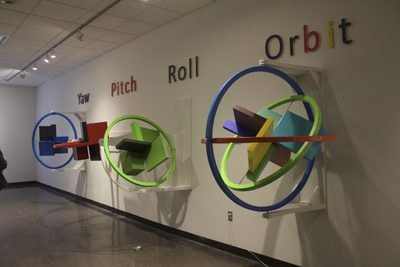
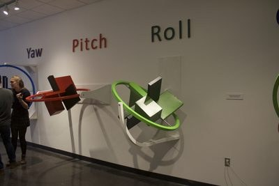
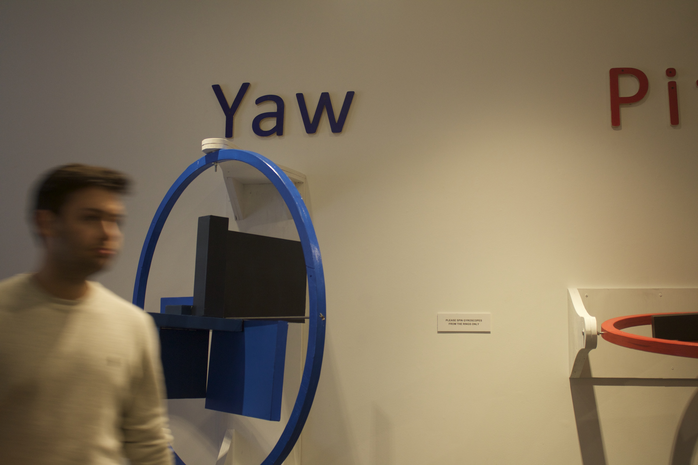
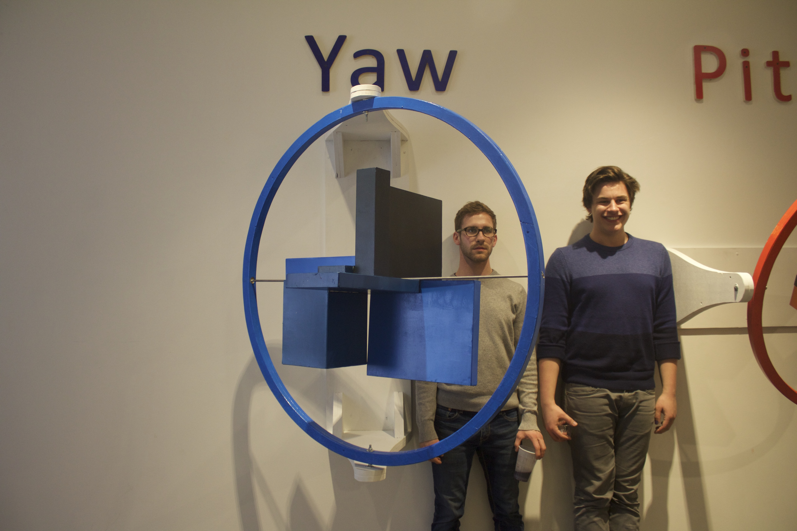
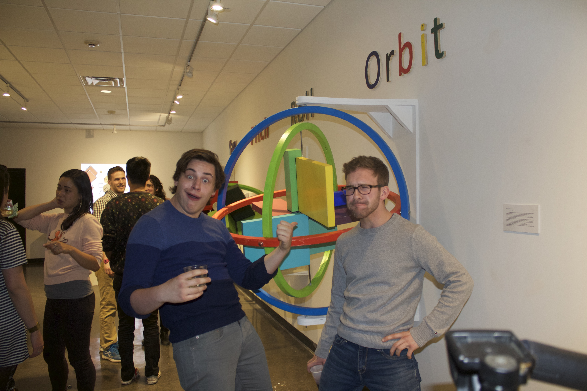
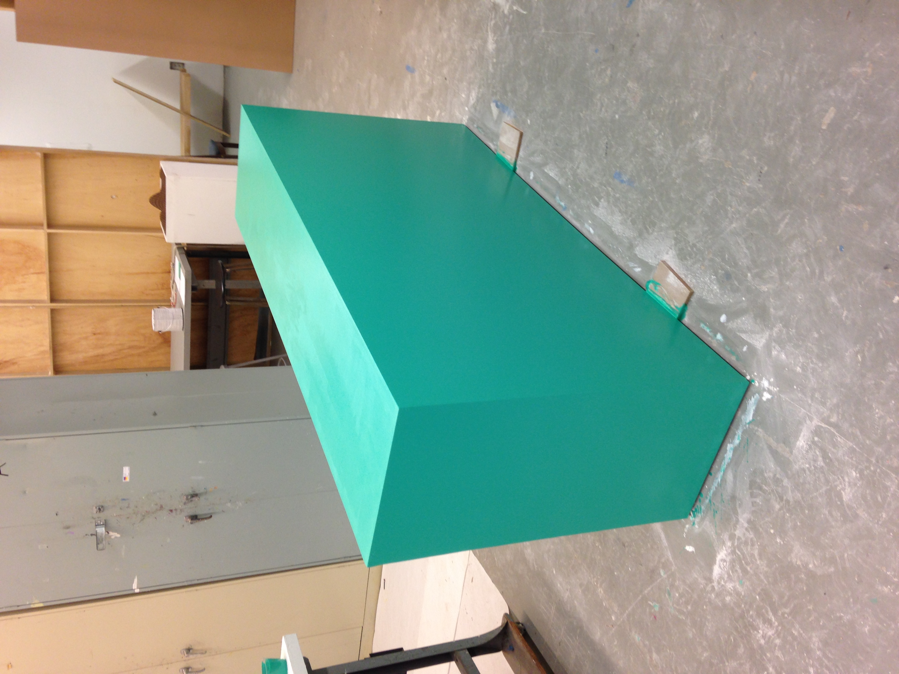
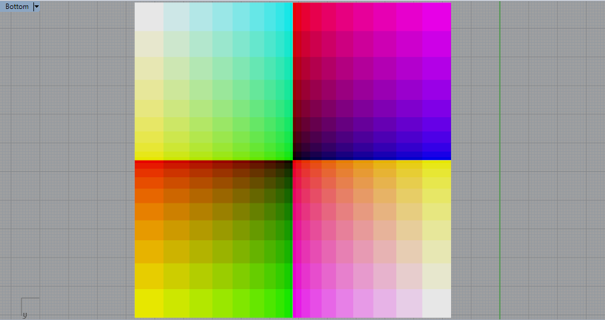
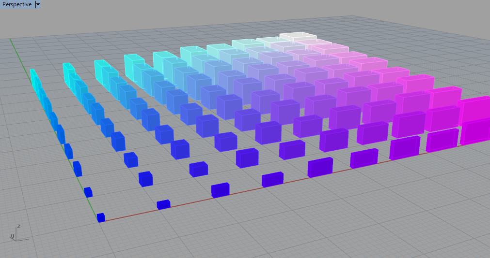

Interactive Installation
2015
Python / OpenCV
Processing
Grasshopper
Woven paper
Wood / metal
Interactive / Sculpture
Dimension = Color is an interactive art experience that demonstrates, in a real space, the power of sculpting in a virtual environment. Two variables normally independent of one another — spatial dimension and color — are correlated through programming and scripting. In virtual environments this correlation is intuitive; in physical space, hard to envision. Every work in Dimension = Color attempts to minimize the distance between the virtual and the real.
Wood, metal, foam core
A gyroscopic sculpture that translates the experience of orbiting a 3D model into physical space. Each axis of rotation (Roll, Pitch, Yaw) is correlated to an RGB color component: the farther each axis rotates from its origin, the more saturated its color becomes. When all three axes combine, the full colored box conglomerate appears.
Woven paper
A system of rectangular prisms whose dimensions are determined by their distance from an origin point, and whose colors are assigned by the same logic (X → Red, Y → Green, Z → Blue). Two versions explore two- and three-axis color fields.
Computer, webcam, projector, cut paper — with Gareth Chen
A Python / OpenCV script identifies all squares placed in a projection field and projects a color determined by each square's position and area. Participants freely navigate the piece by moving and arranging squares.
As an artist and designer working in the age of the internet, I have instantaneous access to history's collective knowledge of making and creating. There are computer programs specifically designed for planning and designing that are so powerful, they run virtual environments to house 3D models of a conceptualized work right in the computer. Sol LeWitt would have said that those visualizations were finished pieces of art, but my aim has been to transfer these models into a real space with intent to enhance and further the original concept.
Dimension = Color, as a concept, was designed as a corollary argument to that described above. Each variable (Dimension and Color) in real space normally exists as an independent variable; I have used programming and scripting to correlate the two. In real spaces this can be hard to envision and realize, but in virtual environments these variables can be intuitively and facilely correlated.
Taking a concept difficult to conceptualize without the power of computers and physicalizing it in a real space brings the virtual into the real in a more meaningful way than similar reconstruction could in any way. Every work in Dimension = Color calls attention to the process by which these works were conceptualized. By doing so, they heighten the link between the virtual concept and the real model.








